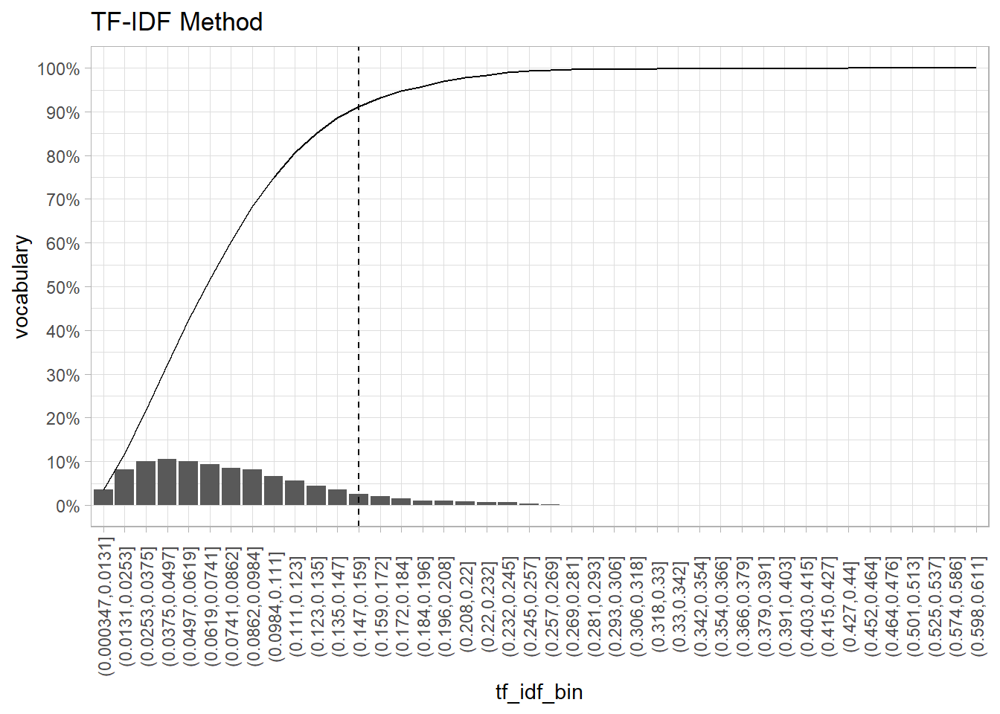
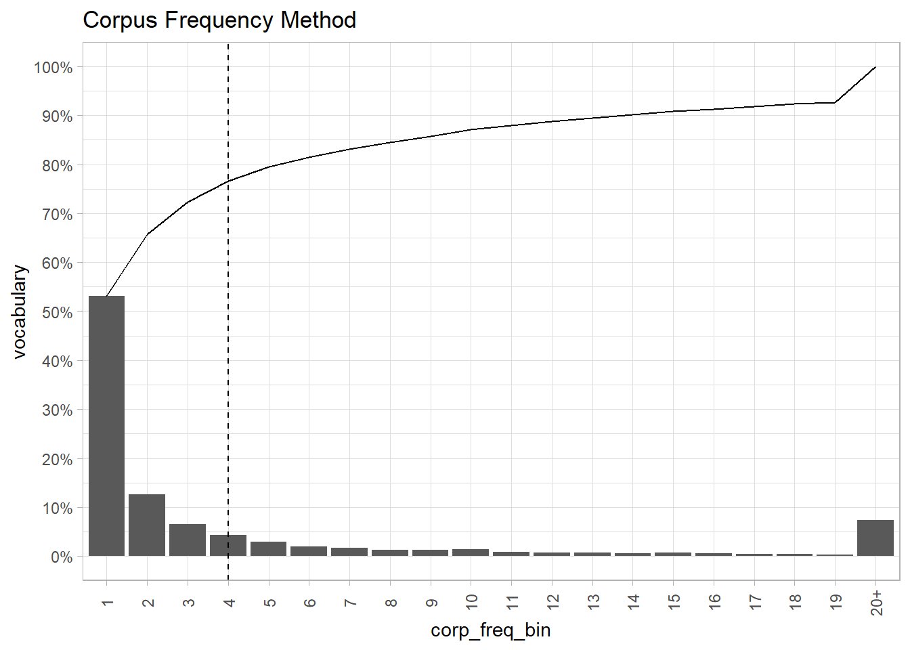
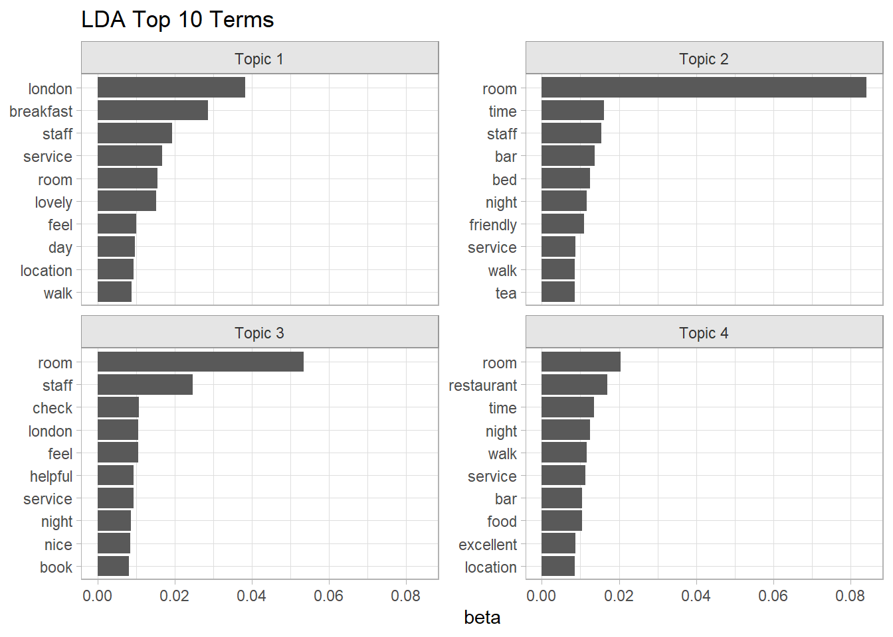
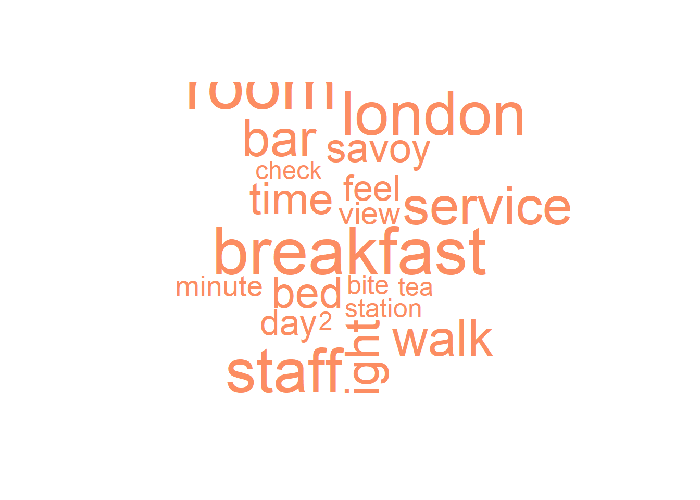
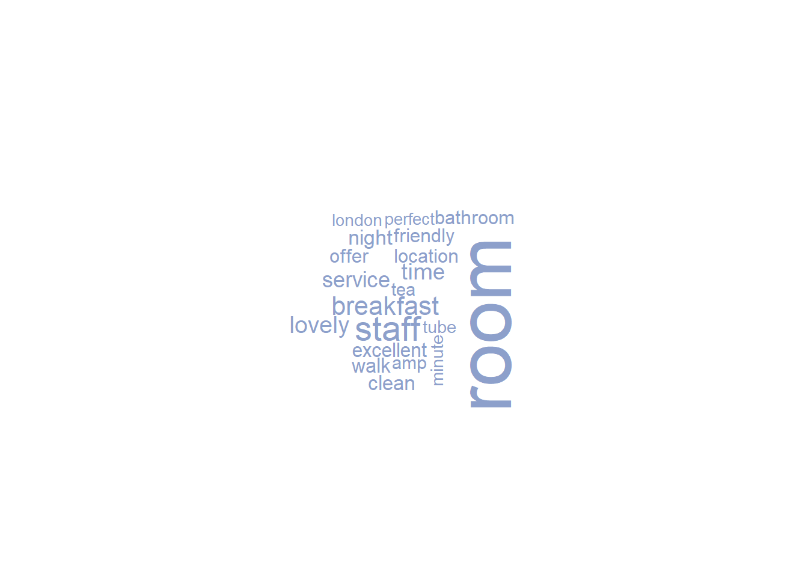
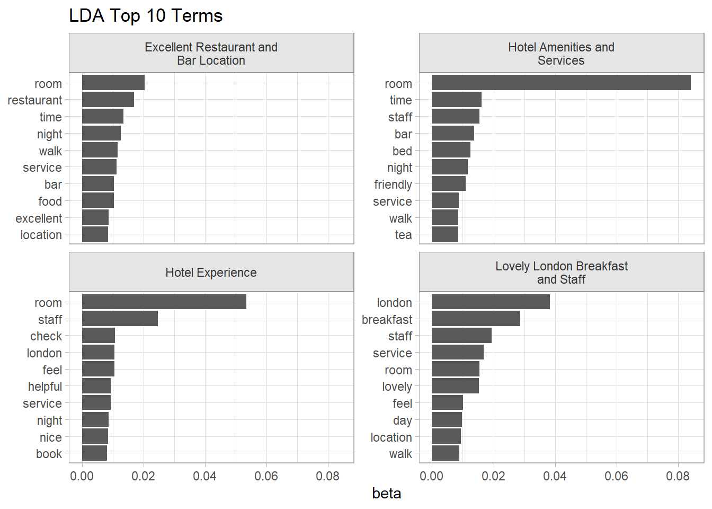

2.1 LDA
Latent Dirichlet allocation (LDA) is one of a family of mixed membership models that decompose data into latent components. Latent means unidentified topics and Dirichlet is the distribution followed by the words in topics and by topics in documents.
LDA presumes each document is created by a generative process in which topics are selected from a probability distribution and then words from that topic are selected from another distribution. LDA optimizes the distributions by performing a random search through the parameter space to find the model with the largest log-likelihood. There are multiple search algorithms, but the preferred one appears to be Gibbs sampling, a type of Monte Carlo Markov Chain (MCMC) algorithm. The algorithm is:
For each document \(d = 1 \ldots D\), randomly assign each word \(w = 1 \ldots W\) to one of \(k = 1\ldots K\) topics.
Tabulate the number of words in each document and topic, a \(D \times K\) matrix, and tabulate the number of occurrences of each word in each document, a \(W \times D\) matrix.
Resample to remove a single instance of a word from the corpus, decrementing the document’s topic count and the word’s topic count.
Calculate the gamma matrix and the beta matrix.
- the gamma matrix (aka theta) is the topical prevalence, the probability distribution of topics for each document, \[p(k|d) = \frac{n_{dk} + \alpha}{N_d + K \alpha}\] were \(n_{dk}\) is the number of words in document \(d\) for topic \(k\), \(N_d\) is the total number of words in \(d\), and \(\alpha\) is a hyperparameter. For each \(d\), \(\sum_{k \in K} \gamma_{dk} = 1\).
- the beta matrix (aka phi), is the topical content, the probability distribution of words for each topic, \[p(w|k) = \frac{m_{w,k} + \beta}{\sum_{w \in W}m_{d,k} + W\beta}\] where \(m_{w,k}\) is the corpus-wide frequency count of word \(w\) to topic \(k\), \(W\) is the number of distinct words in the corpus, and \(\beta\) is a hyperparameter. For each \(k\), \(\sum_{w \in W} \beta_{kw} = 1\).
Calculate the joint probability distribution of words for each document and topic, \(p(w|k,d) = p(k|d)p(w|k)\). Assign each word, \(w\), to the topic with the maximum joint probability.
Repeat steps 3-6 for all of the words in all of the documents.
Repeat steps 3-7 for a pre-determined number of iterations.
LDA thus has 3 hyperparameters: the document-topic density factor, \(\alpha\), the topic-word density factor, \(\beta\), and the topic count, \(K\). \(\alpha\) controls the number of topics expected per document (large \(\alpha\) = more topics). \(\beta\) controls the distribution of words per topic (large \(\beta\) = more words). Ideally, you want a few topics per document and a few words per topic, so \(\alpha\) and \(\beta\) are typically set below one. \(K\) is set using a combination of domain knowledge, coherence, and exclusivity.
Notice that LDA is a “bag of words” method. It does not consider the order of the tokens in the text, so where tokens are located what other tokens are nearby do not factor into the output.
Preprocessing
We already cleaned the text in Chapter 1. The next step is to create a document-term matrix (DTM). A DTM has one row per per document, one column per term, and the cells are frequencies. The cleaned text mostly infrequently used terms that will not contribute to topics, so we need to remove the sparse terms first.
Keep only the decent sized reviews, ones with at least 25 words. If this is a predictive model, now is the time to create a train/test split. Consider weighting the split by the outcome variable of interest, rating in this case, to ensure proportional coverage.
set.seed(12345)
hotel_lda <- prepped_hotel %>% filter(prepped_wrdcnt >= 25)
# Parameter `strata` ensures proportional coverage of ratings.
lda_split <- rsample::initial_split(hotel_lda, prop = 3/4, strata = rating)
lda_train <- token %>% semi_join(training(lda_split), by = join_by(review_id))
lda_test <- token %>% semi_join(testing(lda_split), by = join_by(review_id))Most words add little value to a topic model because they appear infrequently or too frequently. The most common metric for removing sparse terms is the term frequency-inverse document frequency (TF-IDF). TF(t,d) is term t’s usage proportion in document d. IDF(t) the log of the inverse of the term t’s proportion of documents it appears. For example, “savoy” appears in n = 1,824 of the N = 11,835 training documents. Its IDF is log(N/n) = 1.87. “savoy” appears in review #5 in 2 of 28 (7.14%) of the terms. The TF-IDF score is the product of the two numbers. Here is that prepped review.
form moment arrive leave experience absolute perfection service excellence savoy staff famous personalise service rich heritage savoy win world eat dine woud highly recommend kaspers restaurant wait return
Nagelkerke (2020) suggests another route. You already removed the stop words, so the over-used words are out. The TF-IDF approach was developed for long documents. Smaller documents like online reviews have little TF variation (most words are used only once or twice in a review), and the IDF ends up dominating. All you need to do is filter on each word’s corpus frequency.
In the end, you need to experiment to find the right cutoff. Using TF-IDF, the elbow in the plot below is around .15. That threshold would throw out about about 80% of the vocabulary. The corpus frequency plot has an elbow around 4 occurrences. That threshold would throw out 80% of the vocabulary.
lda_word_stats <-
lda_train %>%
count(review_id, word, name = "doc_freq") %>%
bind_tf_idf(word, review_id, doc_freq) %>%
mutate(.by = word, corp_freq = sum(doc_freq)) %>%
mutate(corp_pct = corp_freq / sum(doc_freq))
lda_word_stats %>%
mutate(tf_idf_bin = cut(tf_idf, breaks = 50)) %>%
summarize(.by = tf_idf_bin, vocab = n_distinct(word)) %>%
arrange(tf_idf_bin) %>%
mutate(pct = vocab / sum(vocab), cumpct = cumsum(pct)) %>%
ggplot(aes(x = tf_idf_bin)) +
geom_col(aes(y = pct)) +
geom_line(aes(y = cumpct, group = 1)) +
geom_vline(xintercept = 9, linetype = 2) +
labs(y = "vocabulary", title = "TF-IDF Method") +
scale_y_continuous(breaks = seq(0, 1, .1), labels = percent_format(1)) +
theme(axis.text.x = element_text(angle = 90, vjust = .5))
lda_word_stats %>%
mutate(
corp_freq_bin = if_else(corp_freq > 19, "20+", as.character(corp_freq)),
corp_freq_bin = factor(corp_freq_bin, levels = c(as.character(1:19), "20+"))
) %>%
# mutate(corp_pct_bin = cut(corp_pct, breaks = 100)) %>%
summarize(.by = corp_freq_bin, vocab = n_distinct(word)) %>%
arrange(corp_freq_bin) %>%
mutate(pct = vocab / sum(vocab), cumpct = cumsum(pct)) %>%
ggplot(aes(x = corp_freq_bin, y = cumpct)) +
geom_col(aes(y = pct)) +
geom_line(aes(y = cumpct, group = 1)) +
geom_vline(xintercept = 4, linetype = 2) +
labs(y = "vocabulary", title = "Corpus Frequency Method") +
scale_y_continuous(breaks = seq(0, 1, .1), labels = percent_format(1)) +
theme(axis.text.x = element_text(angle = 90, vjust = .5))
Compare the resulting DTMs. The TF-IDF method keeps half the documents and 11K terms. The corpus frequency method retains all documents while limiting the vocabulary to 6K terms. Corpus frequency does seem superior.
(lda_dtm_tfidf <-
lda_word_stats %>%
filter(tf_idf > .2) %>%
cast_dtm(document = review_id, term = word, value = doc_freq))
## <<DocumentTermMatrix (documents: 5650, terms: 11118)>>
## Non-/sparse entries: 16231/62800469
## Sparsity : 100%
## Maximal term length: 311
## Weighting : term frequency (tf)
(lda_dtm_corpfreq <-
lda_word_stats %>%
filter(corp_freq > 5) %>%
cast_dtm(document = review_id, term = word, value = doc_freq))
## <<DocumentTermMatrix (documents: 11833, terms: 5702)>>
## Non-/sparse entries: 578433/66893333
## Sparsity : 99%
## Maximal term length: 16
## Weighting : term frequency (tf)
lda_dtm <- lda_dtm_corpfreqThe pre-processing step sure pared down the corpus. The high frequency terms comprise only 20% of the vocabulary, but are still 95% of the total word usage.
bind_rows(
`high freq words` = lda_word_stats %>% filter(corp_freq > 5) %>%
summarize(distinct_words = n_distinct(word), total_words = sum(doc_freq)),
`low freq words` = lda_word_stats %>% filter(corp_freq <= 5) %>%
summarize(distinct_words = n_distinct(word), total_words = sum(doc_freq)),
.id = "partition"
) %>%
mutate(total_pct = total_words / sum(total_words) * 100,
distinct_pct = distinct_words / sum(distinct_words) * 100) %>%
select(partition, distinct_words, distinct_pct, total_words, total_pct) %>%
janitor::adorn_totals()## partition distinct_words distinct_pct total_words total_pct
## high freq words 5702 20.13845 688130 95.264267
## low freq words 22612 79.86155 34208 4.735733
## Total 28314 100.00000 722338 100.000000Fit
There are several parameters you might tweak for the model fit. The biggest surprise is that you set the number of topics, k. In general, you only want as many topics as are clearly distinct and that you can easily communicate to others. knowledgeR explains the harmonic mean method for optimization, but Nagelkerke (2020) suggests sticking with the art vs science approach and picking your own k.
Another option is to use the perplexity statistic to help identify a good value for k. Perplexity is a measure of how well a probability model fits a new set of data. Look for the elbow in a scree plot. The code below does that, but it runs forever, especially as you get to higher values of k. I abandoned it.
set.seed(12345)
train_ind <- sample(nrow(lda_dtm), floor(0.75*nrow(lda_dtm)))
k_train <- lda_dtm[train_ind, ]
k_test <- lda_dtm[-train_ind, ]
k = c(seq(from = 2, to = 5, by = 1))
perp <- k %>%
map(~ LDA(k_train, k = .x)) %>%
map(~ perplexity(.x, newdata = k_test)) %>%
as.numeric()
data.frame(k = k, perplexity = perp) %>%
ggplot(aes(x = k, y = perplexity)) +
geom_point() +
geom_smooth(method = "loess", se = FALSE) +
labs(title = "Perplexity Plot for LDM model")I will stick with a simple k = 4 model, mostly for convenience since this is just an example.
# Runs in about a minute.
lda_fit <- LDA(lda_dtm, k = 4)
# Save this off so we don't have to re-run.
saveRDS(lda_fit, file = "input/lda_fit.RDS")The fitted object contains two matrices. The beta (aka “phi”) matrix is the distribution of tokens (cols) over topics (rows). The gamma (aka “theta”) matrix is the distribution of documents (rows) over topics (cols). The row sum is 1 for each matrix (sum of topic probabilities, some of document probabilities).
lda_beta_mtrx <- posterior(lda_fit) %>% pluck("terms") %>% as.matrix()
# One row per topic, one col per token.
dim(lda_beta_mtrx)
## [1] 4 5702
# Word probability distribution sums to 1 for each topic.
sum(lda_beta_mtrx[1, ])
## [1] 1
lda_gamma_mtrx <- posterior(lda_fit) %>% pluck("topics") %>% as.matrix()
# One row per document, one col per topic
dim(lda_gamma_mtrx)
## [1] 11833 4
# Topic probability distribution sums to 1 for each document.
sum(lda_gamma_mtrx[1, ])
## [1] 1tidytext::tidy() pivots the beta matrix into a [topic, term, beta] data frame.
lda_beta <- tidy(lda_fit, matrix = "beta")
lda_top_tokens <-
lda_beta %>%
mutate(topic = factor(paste("Topic", topic))) %>%
group_by(topic) %>%
slice_max(order_by = beta, n = 10) %>%
ungroup()
lda_top_tokens %>%
ggplot(aes(x = beta, y = reorder_within(term, by = beta, within = topic))) +
geom_col() +
scale_y_reordered() +
facet_wrap(facets = vars(topic), scales = "free_y") +
labs(y = NULL, title = "LDA Top 10 Terms")
Word clouds tell you more or less the same thing.
colors6 <- RColorBrewer::brewer.pal(n = 4, name = "Set2")
x <- map(
c(1:4),
~ with(lda_beta %>% filter(topic == .x),
wordcloud::wordcloud(
term,
beta,
max.words = 20,
colors = colors6[.x]
))
)
There is a downside to this evaluation. Popular words like “room” and “stay” appear at or near the top in all three topics. You might want to look at relative popularity instead: the popularity within the topic divided by overall popularity. That’s problematic too because words that only appear in few reviews will pop to the top. What you want is a combination of both absolute term probability and relative term probability. LDAvis::serVis() can help you do that.
Unfortunately, the plot from LDAvis::serVis() is interactive and does not render in the RMarkdown notebook html, so below is just a screenshot of the code chunk output.
The left side shows the topic sizes (documents) and topic distances. The right side shows the most important tokens.
# word count for each document
doc_length <- lda_word_stats %>% filter(corp_freq > 5) %>%
summarize(.by = review_id, n = sum(doc_freq)) %>% pull(n)
# vocabulary: unique tokens
vocab <- colnames(lda_beta_mtrx)
# overall token frequency
term_frequency <- lda_word_stats %>% filter(corp_freq > 5) %>%
summarize(.by = word, n = sum(doc_freq)) %>% arrange(match(word, vocab)) %>% pull(n)
# create JSON containing all needed elements
json <- LDAvis::createJSON(lda_beta_mtrx, lda_gamma_mtrx, doc_length, vocab, term_frequency)
LDAvis::serVis(json)
The gamma matrix shows topic distributions. You can use it to see if topics vary by a covariate.
tidy(lda_fit, matrix = "gamma") %>%
mutate(document = as.numeric(document), topic = factor(topic)) %>%
inner_join(prepped_hotel, by = join_by(document == review_id)) %>%
summarize(.by = c(hotel, topic), gamma = mean(gamma)) %>%
ggplot(aes(x = gamma, y = fct_rev(hotel), fill = topic)) +
geom_col() +
labs(y = NULL, title = "LDA Topic Distribution")
Iterate through the model by tweaking k, excluding words that dominate and suppress the more interesting subdomains, and/or changing the minimal token frequency to focus on more/less dominant tokens. You can also change the document sampling strategy to promote interesting domains, like we did when we over sampled the low hotel ratings.
Topic Labeling with ChatGPT
To OpenAI’s ChatGPT API service requires an API token. I created one at https://platform.openai.com/api-keys and saved it to .Renviron. See usethis::edit_r_environ().
# Create a function to send each list of topic words to Open AI as a separate request.
get_topic_from_openai <- function(prompt) {
my_resp <-
request("https://api.openai.com/v1/chat/completions") %>%
req_headers(Authorization = paste("Bearer", Sys.getenv("OPENAI_API_KEY"))) %>%
req_body_json(list(
model = "gpt-3.5-turbo",
# Temperature [0,2] controls creativity, predictable -> variable.
temperature = 1,
messages = list(
# System prompt sets repeated context. It is prefixed to prompts.
list(
role = "system",
content = paste("You are a topic modeling assistant. You accept lists ",
"of words in a topic and summarizes them into a salient ",
"topic label of five words or less. How would you ",
"summarize the following list? The list is in descending ",
"order of importance, so the first term in the list is most ",
"strongly tied to the topic. Return just the topic label and ",
"nothing else.")
),
list(
role = "user",
content = prompt
)
)
)) %>%
req_perform() %>%
resp_body_json() %>%
pluck("choices", 1, "message", "content")
}
lda_topics <-
lda_top_tokens %>%
nest(data = term, .by = topic) %>%
mutate(
token_str = map(data, ~paste(.$term, collapse = ", ")),
topic_lbl = map_chr(token_str, get_topic_from_openai),
topic_lbl = str_remove_all(topic_lbl, '\\"'),
topic_lbl = snakecase::to_any_case(topic_lbl, "title")
) %>%
select(-data)
# Save to file system to avoid regenerating.
saveRDS(lda_topics, file = "input/lda_topics.RDS")Let’s see the topic summary with the newly generated labels.
lda_top_tokens %>%
inner_join(lda_topics, by = join_by(topic)) %>%
mutate(topic_lbl = str_wrap(topic_lbl, 25)) %>%
ggplot(aes(x = beta, y = reorder_within(term, by = beta, within = topic_lbl))) +
geom_col() +
scale_y_reordered() +
facet_wrap(facets = vars(topic_lbl), scales = "free_y") +
labs(y = NULL, title = "LDA Top 10 Terms")
TODO
I still need to learn more about
- Held-out Likelihood (Wallach et al., 2009).
- Semantic Coherence. The coherence measure evaluates topics.
- Exclusivity. Generally, the greater the number of topics in a model, the lower the quality of the smallest topics. One way around this is hiding the low-quality topics.